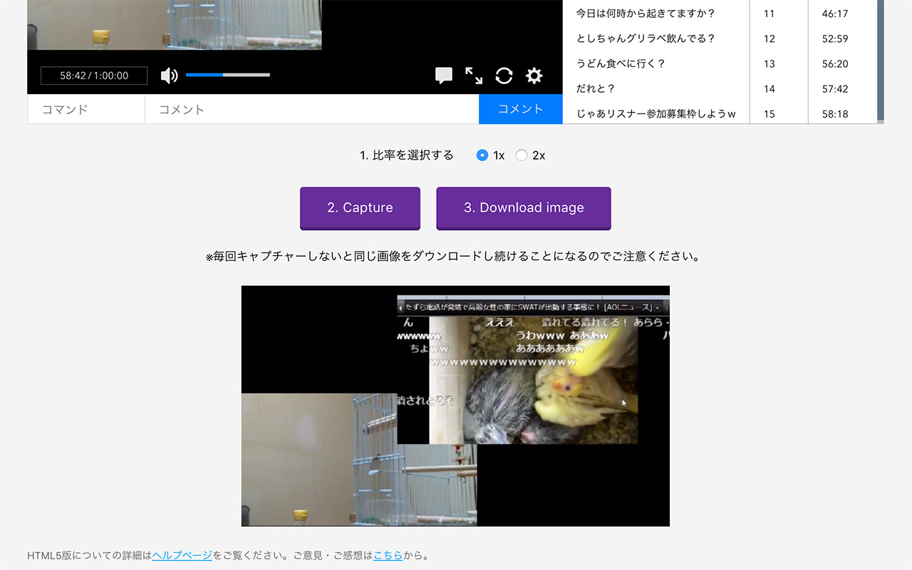

Chrome拡張 ニコ生・映像だけスクショ
某コミュニティの放送（G4UR）用です。
これまではウィンドウ全体のスクショを撮ってから毎回切り取る必要があって面倒でしたが、ニコ生がHTML5プレイヤーになったので動画部分だけのキャプチャーができるようになりました。
Flash版の放送orプレイヤーでは動作しません。

使い方
- キャプチャーの比率（等倍、2倍）を選択する。
- 「Capture」ボタンでスクリーンショットが表示されます。
（この時点では保存されていません） - 「Download image」ボタンでPCに保存されます。
（たぶんChromeのダウンロードフォルダ）
不具合等について
突貫での制作および低い技術力のために不具合で動かなかったらごめんなさい。
@utzmieまで教えてもらえたら、もしかしたら検証できるかもしれません。